8.3. Raster data Exercise 1: Basic Assessment of Flood Exposure in the Indus Basin in Pakistan#
8.3.1. Aim of the exercise#
The aim of this exercise is to gain a basic understanding of working with raster data and its visualisation and advantages. To achieve this, several datasets such as a digital elevation model, population data and mapped flood extents are processed to create a simple flood risk map for the Indus River basin in Pakistan.
8.3.2. Relevant Wiki Articles#
8.3.3. Data#
Download all datasets here and save the folder on your computer. Unzip the .zip file. The unzipped folder is structured according to the recommended folder structure for QGIS projects. Under “data > input” you find the following files:
Vectordata
Pakistan_indusbasin_streams.shp(Line Geometry)Pakistan_admin.gpkg(GeoPackage)Pakistan_national_borders (Lines)
Pakistan_admin2 (Polygons)
Pakistan_floodextents_2023.shp(Multipolygon)
Rasterdata
Pakistan_DEM.tif(Raster)Pakistan_pop_dens_1km.tif(Raster)Pakistan_precip.tif(Raster)
8.3.4. Tasks 1#
Our first goal is to get a proper overview over the datasets and get familiar with the different visualisation options for raster data and how to ideally use them.
Open QGIS and create a new project by clicking on
Project->New. Set your Project CRS to “WGS 84 / UTM zone 43N”.Once the project is created save the project in the “project” folder of the “Ex_Pakistan_floodrisk”. To do that click on
Project->Save asand navigate to the folder. Name the project “Pakistan_floodrisk”.Import the GeoPackages
Pakistan_admin.gpkgand the rastersPakistan_DEM_1km.tif,Pakistan_pop_dens_1km.tifinto your project via drag and drop (Wiki Video). Or by clickingLayer->Add Layer->Add Vector Layer/Add Raster Layer
Attention
If a raster is displayed mostly or completely black upon loading it into QGIS, most of the time the reason is not an error or corrupted data but just the initial visualisation style
First have a look at the DEM layer (
Pakistan_DEM). The raster-cells of the DEM display the elevation above sea level, where are high and low lying areas located in Pakistan occording to the expandable layer legend on the left? Use the to click on a couple of raster-cells to obtain their values, that are the displayed in a panel on the right.
to click on a couple of raster-cells to obtain their values, that are the displayed in a panel on the right.
What do you think is the highest and lowest elevation approximately?
Can you identify areas with different terrain characteristics in your DEM?
{kind=link}
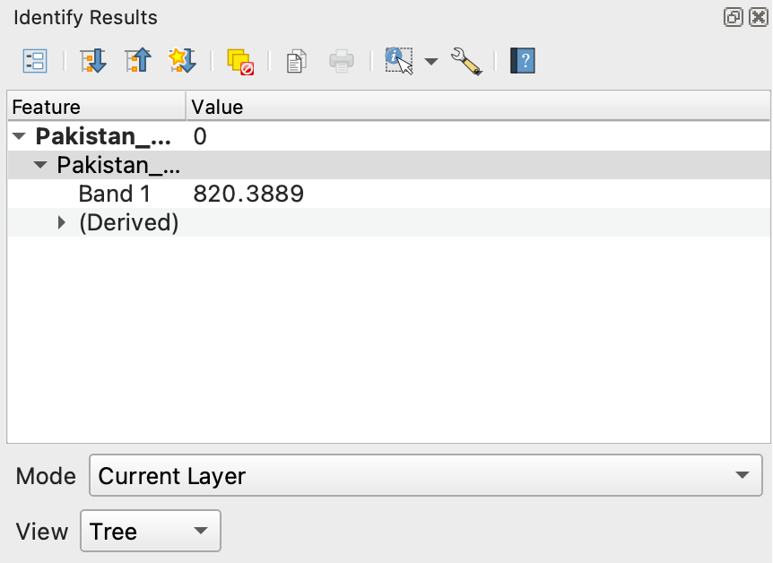
To get some basic information about your raster right click on the layer and select
Properties. Under the tab “Information” various different attributes of the raster, such as the Coordinate Reference System (CRS), the spatial resolution or the basic statistical parameters, are listed.What is the cell size of the DEM?
What are the minimum and the maximum values?
Which CRS is being?
What is the extent of the raster layer?
Let’s explore the different ways to visualise a raster layer and find the optimal visualisation for our DEM. Open the layer styling panel by right clicking on the top toolbar and ticking the box
Layer Styling Panel. The panel very similar to the one displayed when visualizing vector data.Open the dropdown menu right below the layer name. There are six visualization modes you can choose from. Try each of them and take a guess which one would be suitable.
{kind=link}
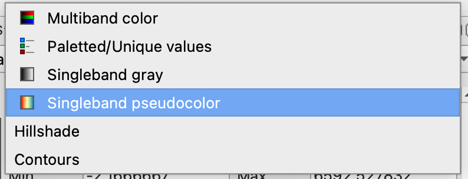
Choose “Singleband pseudocolour” and select a colour palette you like just like with the visualization of vector layers. Below the classification window you can choose from three classification modes (“Continuous”, “Equal Interval” and “Quantile”) for the visual classification of the raster. Which one seems to suit the display of elevation the best?
Finally you can choose between the interpolation methods “Linear” (smooth display) and “Discrete” (display in distinct classes). Choose one of them. If you choose “Discrete” you can alter the number of visual breaks in your data display by changing the number of classes in the “Classes” menu.
{kind=link}
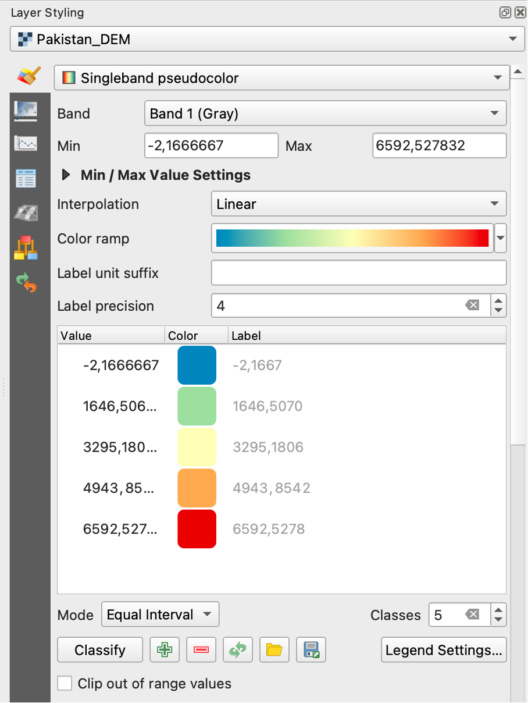
Fig. 8.9 The symbology panel of raster layers in QGIS 3.36#
Attention
In all following figures regarding tool interfaces in this exercise, menus or prompts that have to be altered for the given task are highlighted with red boxes.
Your DEM (Pakistan_DEM) could look something like this now (Colour palette “Spectral” and interpolation “Linear”)
{kind=link}
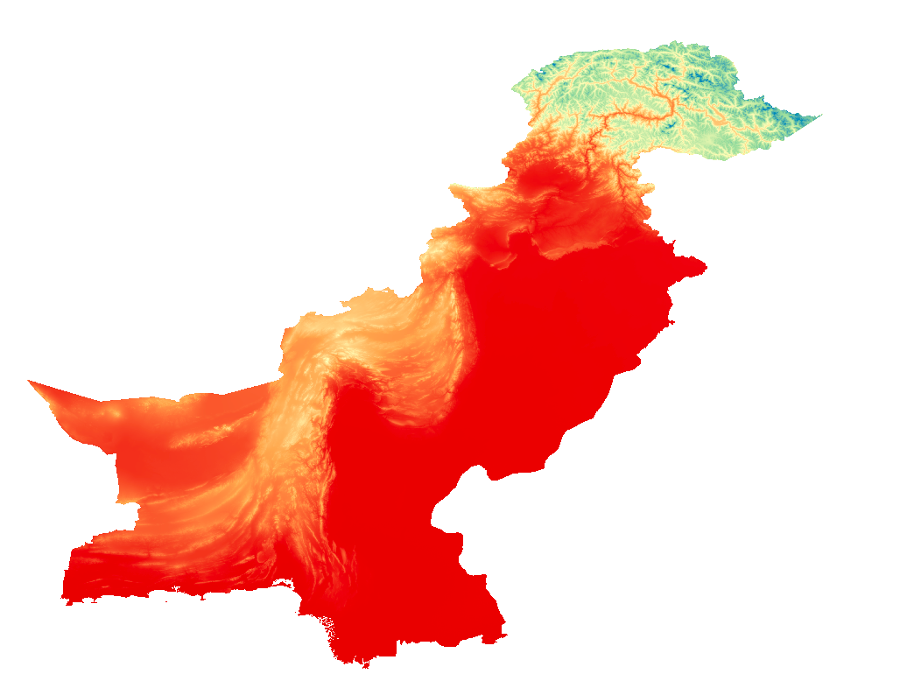
Fig. 8.10 Exemplary visualization of the DEM with linear interpolation.#
Now, we want to have a look at a different raster: Make the
Pakistan_pop_density_1kmlayer visible. This raster stores values of population density per kilometer in 1km x 1km cells, so effectively the approximate population count per area. The initial visualization seems not to display the information of the different population densities very well, as it is mostly black. We will fix this with the following steps:Have a look of the value range of the raster in the raster properties and check some values in different areas with the
tool.The raster covers a very large value range from around 0,2 - 31300. This is the case because of the disparity in population between very remote areas and extremely densely populated mega-cities that are both present in Pakistan. To have a closer look at the value distribution among the cells of the raster generate a histogram in the layer styling panel by selecting the
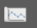
icon on the left and click onCompute histogram. Have a closer look at the histogram by zooming in to the range of “Pixel Value” = 5000 and “Frequency” = 2000. A few things are visible:
The Raster values are extremely tailed with very few cells higher than 2000 but extent into ay higher ranges.
There are extremely many values in the very low value range
The vast majority of the values seem to be between around 0 to 3000.
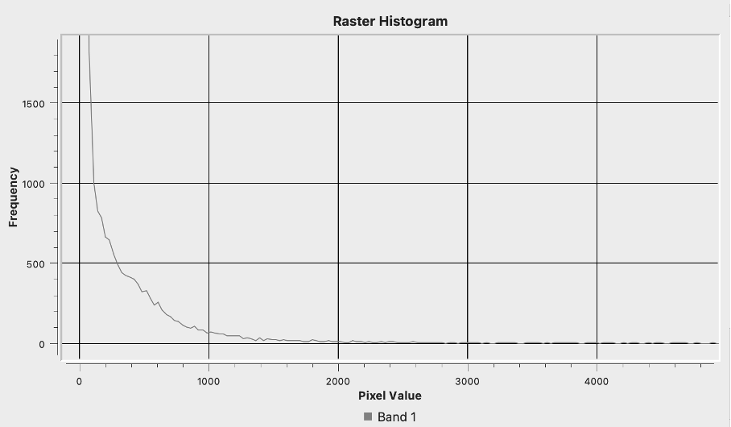
Fig. 8.11 Histogram of the value distribution of “Pakistan_pop_density_1km”#
Based on the exploration of the histogram try a few value boundaries for visualisation at the top of your layer styling panel (select the
 menu). Keep in mind that we look at population data and that population distribution is very spatially heterogenous most of the time. Try the following combinations and choose the one that suits the data best:
menu). Keep in mind that we look at population data and that population distribution is very spatially heterogenous most of the time. Try the following combinations and choose the one that suits the data best:
Min = 0 Max = 1000
Min = 0 Max = 3000
Min = 0 Max = 5000
{kind=link}
{kind=link}
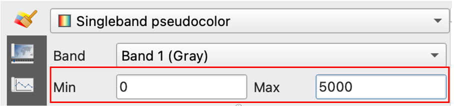
Fig. 8.12 Prompts to adjust die value range for visualization#
Have a look at the histogram of the DEM and adjust the visualization range for the DEM too if you deem it necessary.
A common and easy method to enhance the visuals of a map you generate with QGIS is the addition of a transparent “Hillshade” layer. You can generate it with the
Hillshadetool that you can find in your Processing toolbox panel or viaRaster>Analyse>Hillshade.Open the Hillshade tool and select your DEM layer in the dropdown menu of “Elevation layer”
The next modifiable Parameter is the “Z factor”. It is used to adjust the vertical exaggeration of elevation data, influencing the steepness of slopes in the visualization. You can just use the default od one or change it to to “2” or “3” if you want a more pronounced shading.
The parameters “Azimuth” and “Vertical angle” determine the direction and angle above the horizon of the imaginary light source creating the shading. We recommend to leave the default values.
Name the output “Hillshade_Pakistan” and select your “temp” folder to save it. Click
Runto generate the Hillshade.When the Hillshade layer is generated set its “global opacity” to 20% in your layer styling panel and position it over the DEM in your layer panel to combine the Hillshade with the DEM. You can also enhance the contrast of the Hillshade layer when you scroll down in the symbology tab
in the layer styling panel to optimize the visualisation.
Tip
While you can choose from all different visalisation methods for your hillshade layer too, e.g. visualize it with a colour palette, it usually yields the best results to use the default “Singleband gray” method.
{kind=link}
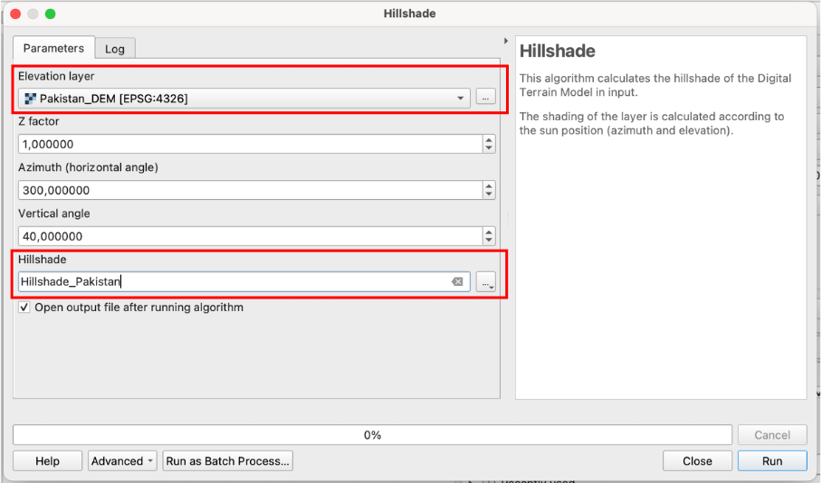
Fig. 8.13 Interface of the hillshade tool#
Note
One general advantage of raster data over vector data is that that they are better suited for deriving further data sets, such as a hillshade raster. There are a multitude of tools in QGIS for the derivation of topographical parameters such as slope or aspect, hydrological parameters such as stream networks or flow accumulation and various different indices.
8.3.5. Task 2#
Now as you have gained a proper understanding of the fundamental visualisation options of raste rdata, we will start to explore some basic methods of processing raster data and generating new datasets with the combination of different rasters and also vector layers.
You will conduct a basic analysis of flood exposure in the Indus river basin in Pakistan based on the raster layers you already worked with and further datasets.
Import the Shapefiles
Pakistan_floodextents_2023.shpandPakistan_indusbasin_streamsas well as the rasterPakistan_precip.tifinto your project via drag and drop (Wiki Video). Or by clickingLayer->Add Layer->Add Vector Layer/Add Raster Layer.The layer
Pakistan_indusbasin_streamscontains line geometries of the main streams of the Indus basin of Pakistan which experienced multiple devastating floods in the last decades.The layer contains a multi polygon geometry of the mapped flood extent of the recent 2023 flood.
To get a approximation of flood exposure our first goal is to create a layer displaying the population that was directly affected by the recent floods. This involves several steps:
First we will covert the
Pakistan_floodextents_2023.shpvector layer to the raster format. To achieve this first create an empty raster that will be the base layer for our rasterization.Open the tool
Create constant raster layerfrom your Processing toolbox panel.Under “Desired extent” choose “Calculate from layer” >
Pakistan_pop_dens_1kmto set the layer extent to the extent of your flood extent layer.Under “Target CRS” choose “EPSG:32642 - WGS 84 / UTM zone 42N” from the dropdown menu. If the CRS does not pop up search it by clicking the
 icon next to the prompt.
icon next to the prompt.As “Pixel size” choose “1000” as the unit of the chosen CRS is meters and the resolution should match our population raster with a cell size of 1 x 1km.
Under “Constant value” choose “0”. This is the value that will be assigned to all raster cells of the created raster.
Save the raster as “Rastermask_floods” in your “temp” folder and click
Runto generate the empty raster.
{kind=link}
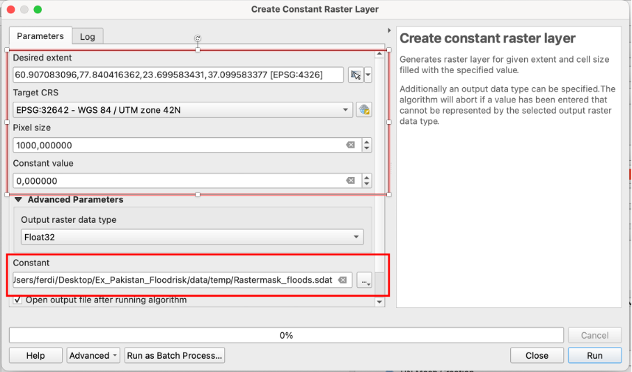
Fig. 8.14 Interface of the “Create constant raster layer” tool#
Now we will convert our Flood extent multipolygon (“Pakistan_floodextents_2023.shp”) to the raster format. This process is called “Rasterization”.
Open the tool
Rasterize (overwrite with fixed value)from your processing toolbox panelAs “Input vector layer ” choose you flood extent layer “Pakistan_floodextents_2023”
As “Input raster layer ” choose your empty raster “Rastermask_floods”
Under “A fixed value to burn” type in “1”. This means that all raster cells of your input rasters that are covered by geometries of your input vector layer will be changed to the value “1”.
Click on
Runto rasterize your flood extents.
The layer
Rastermask_floodsshould now have values of “1” instead of “0” in the cells covered by the flood of 2023. Change the visualization range in your Layer styling panel under “Symbology” to Min = 0 and Max = 1 and check if the rasterization was successful. Your layer should look something like this (Singleband grey” visualization):
{kind=link}
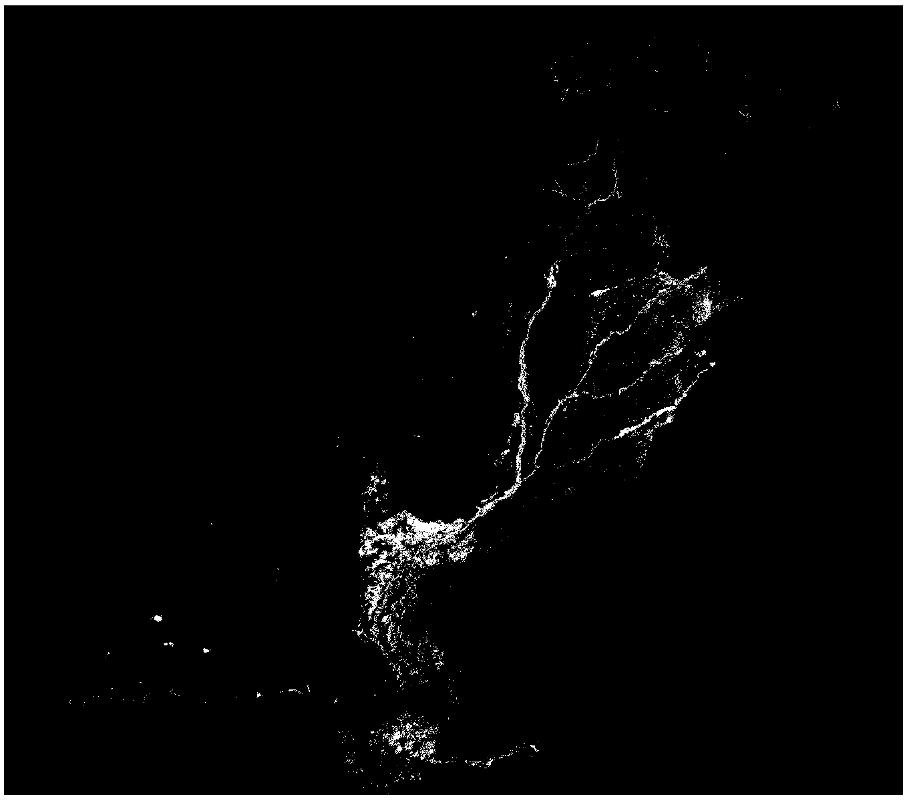
Fig. 8.15 Example raster mask of flooded areas#
Attention
It is possible that due to an error the raster values are not updating after rasterising. To fix this delete the layer from your project, rename it in your temp folder and import in again.
Now we want to extract the population count within the flood zones. We do this by processing two rasters with the
Raster Calculator.Open the raster Calculator from your processing toolbox Panel or via
Raster>Raster Calculator.As “Input Layers” layers select your raster mask “Rastermask_floods” and the population layer “Pakistan_pop_dens_1km.tif” by clicking on the
 icon and ticking the boxes next to the two layers.
icon and ticking the boxes next to the two layers.Click on the
 icon to open the expression interface. You might know a very similar panel from the “field calculator” for conducting calculations in the attribute table of vector layers.
icon to open the expression interface. You might know a very similar panel from the “field calculator” for conducting calculations in the attribute table of vector layers.Enter the following expression to “Raster Calculator Expression” Panel:
"Rastermask_floods@1" * "Pakistan_pop_dens_1km@1"
Note
You can add your Input layers to your expression in the “Raster calculator Expression” Interface by double clicking on them in the “Layers” Panel. The “@1” behind the layer name indicates, that the first band of the layer is used for the calculation. Most rasters just have one band, but there are a few exceptions like multispectral remote sensing data.
All we doing with this expression is a simple mathematical operation: We multiply the value of each cell of the first raster with the value of the cell in the same location of the second raster. The output cell stores the resulting value. Because our
Rastermask_floodsis “0” in all cells outside the flood extents all cells in these areas are multiplied by “0” and become = 0. The cells ofPakistan_pop_dens_1km.tifwithin the flooded areas get multiplied by 1 and keep their values.Under “Output CRS” select “EPSG:32642 - WGS 84 / UTM zone 42N”.
Navigate too your “temp” folder and save the output raster under “Pop_floodextents” and click
Runexecute the calculation.
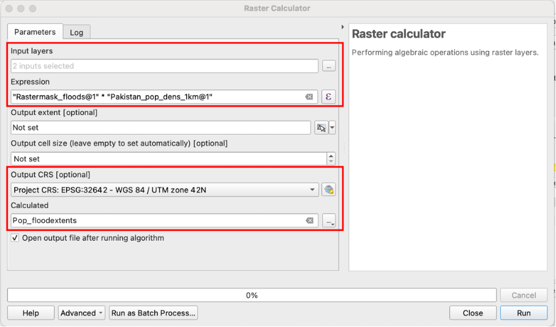
Fig. 8.16 Tool interface of the “Raster calculator”#
For the output layer select a visualization range of Min = 0 and Max = 500 and the colour palette “Mako”. the difference in Population density within the areas of the past floods should now be visible.
{kind=link}
Your layer should look something like this:
{kind=link}
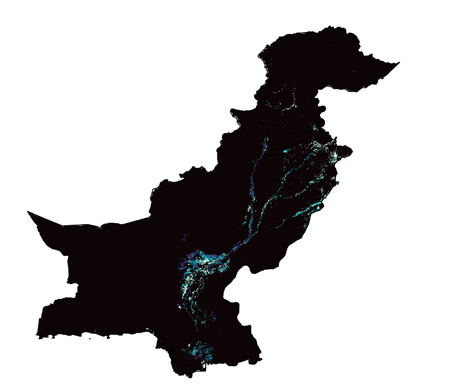
Fig. 8.17 Raster of Population density in flooded areas#
Now we have reached our goal of generating a dataset displaying flood affected population. In the context of real world application in the humanitarian sector or the visualisation of data for people/institutions not familiar with GIS, it can be sensible to aggregate raster data on the level of administrative units.
We will achieve this with our produced dataset on the admin 2 level (districts) in Pakistan by calculating the total population affected by floods per district.
Open the tool
Zonal Statistics(Wiki Article) from your Processing Toolbox Panel.As “Input Layer” choose the layer “Pakistan_admin2” with the polygons of administrative districts.
As “Raster Layer” choose “Pop_floodextent”.
Defining a prefix for your output column is optional but can be helpful for finding the calculated values in large attribute tables. Choose “pop_” as “Output column prefix”.
Below “Statistics to calculate” click on the
icon to access the different options of statistical operations available for calculating polygon values based on your raster.Which statistical operation would suit the task of calculating flood affected population per district?
Solution
“Sum” is the appropriate method, as we want the total population count per district that results from the additions of the values of all cells with affected population per district.
Name your layer “Floodaffected_pop_admin2”, save it to your “output” folder and click
Run.

Fig. 8.18 Interface of the “Zonal statistics” tool#
Now you can refresh your skills learned in the trainings about vector data fort the visualisation of your output layer:
Perform a visualisation of the values in the newly generated field “pop_sum” with graduated classification and the colour palette “Reds”
Choose an appropriate mode of classification, that fits the nature of the displayed data.
Enable labels with the district names (column “ADM2_EN”)
Which districts display the most population affected by the floods?
Your output layer should look something like this:
{kind=link}
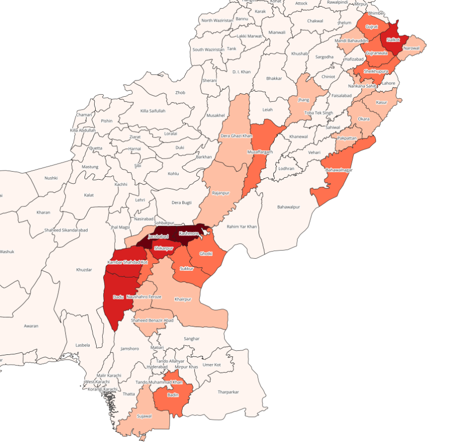
Fig. 8.19 Polygon layer of flood affected population per district#
As we now have a rough idea which in which districts large populations where affected by floods we want to explore if precipitation data of 2023 shows similar patterns, as heavy rainfall is a major predisposing factor for the occurrence of riverine floods: Are the districts experiencing flooding also experiencing the most rainfall?
We will explore this by firstly calculating the the precipitation intensity per district for all of Pakistan in 2023.
Again open
Zonal Statistics.As “Input Layer” again choose “Pakistan_admin2”. The “Rasterlayer this time is “Pakistan_precip_2023”.
Choose the prefix “precip_”.
Which statistical method suits the task if you want to compare precipitation across districts in the context of flooding? Choose a method.
Solution
“Mean” is the appropriate method, as we want to determine the average amount of rainfall per area unit, which is a paramter that we can compare across districts.
Name your layer “Precip_admin2”, save it to your “output” folder and click
Run.Visualize the resuts by implementing a graduated classification of your new column in the attribute table “precip_mean”
Your result should look somehing like this:
{kind=link}
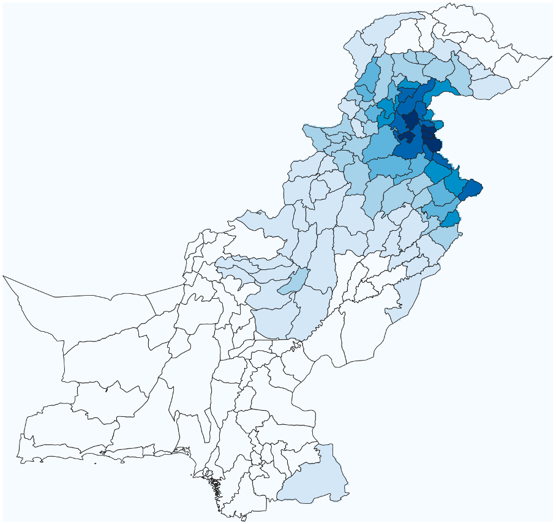
Fig. 8.20 Polygonlayer of mean precipitation per district in 2023#
Compare your layer “Precip_admin2” with “Floodaffected_pop_admin2” and the flooded areas (“Pakistan_floodextent_2023). Would precipitation be a good paramter for the forecasting of floodexposure in the year 2023? Also have a look at the layer “Pakistan_indusbasin_streams” as well as your DEM and try to explain the observed patterns of the spatial distribution of flooded areas and precipitation.